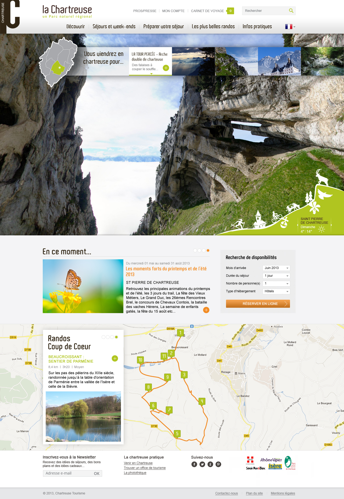

2014/2015 - ICOM Université Lyon 2 - DUCCI 2
2014/2015 - ICOM Université Lyon 2 - DUCCI 2
Gestion d'entreprise
Une première approche
Session 1
Stéphane HULARD
Consultant technique web
Pendant ce cours...
- Tour d'ensemble
- Se vendre
- Un cas projet concret
1. Tour d'ensemble
Un expert, non. mais des conseils
- Différents types de structure
- Connaitre les mécanismes légaux
- Estimer ses charges
- Cadrer un projet et le vendre
- Suivi au quotidien (trésorerie, facturation, devis...)
Une bible pour les indépendants
Différents types de structure
- EI (Ex: Affilié à la Maison des artistes, Auto entrepreneur, Indépendant)
- EURL, EIRL
- SARL, SAS, SASU...
Pour une liste complète, voir :
Choix du type de structure
Il est impératif de bien choisir son type de structure, en fonction :
- du CA attendu (il y a des limites sur certains statuts : AE)
- du type de préstation (BNC, BIC)
- du cadre juridique (patrimoine personnel, associés ou non...)
Pour cela il faut essayer de comprendre les différences même s'il est parfois difficile de trouver des informations fiables de l'état.
La création de certaines structure demande des démarches complexes et a un coût
Se rapprocher des bonnes personnes
Des organismes sont là pour vous guider dans la démarche de création
- Chambre de Commerce et d'Industrie (CCI)
- Experts comptables
- Votre entourage ?
Changement de statut
Il est toujours possible de changer de statut une fois l'entreprise en place.
- Si le CA augmente
- Si le cadre juridique doit évoluer
- Si des associés sont intégrés
- Parfois même il change automatiquement...
La sécurité sociale
Un entrepreneur individuel n'est pas affilié à la "CPAM" comme un salarié. Il doit choisir un organisme spécifique pour sa sécurité sociale.
- RSI : Régime social des indépendants
- Une très mauvaise couverture en cas d'accident de travail
Exception pour les affiliés à la MDA qui sont rattachés à la CPAM...
Les charges sociales
Dès la première facture faite, des charges sociales sont appliquées...
- Par la caisse sociale (URSSAF, MDA)
- Par la caisse santé (RSI)
- Par la caisse retraite (CIPAV)
Des modalités de calculs complexes avec des plafonds mais au final, entre 35% et 40% tout confondu
Pour les régimes micro (MDA, AE) les charges sont plus légères.
La TVA
La TVA (Taxe sur la Valeur Ajoutée) est une taxe intégrée dans les factures des entreprises qui est payée uniquement par le consommateur final. Toutes les entreprises ne sont pas assujettis à la TVA (micro BNC).
- La TVA est vendue sur les prestations au taux actuel: 20%
- La TVA est achetée sur les produits consommés
- Bilan: rembourser/récupèrer le delta acheté/vendu à l'état
Cette taxe permet aux entreprises d'acheter les consommables et services hors taxe
Des questions ?
Combien d'entres vous seraient intéressés pour aller plus loin ?
2. Se vendre
Un positionnement à trouver
- Quel genre de prestations ?
- Quelles expertises ?
- Etudier le marché
Le réseau, un élément vital
C'est l'élément le plus structurant dans les choix des clients. Il faut cultiver son image et rester professionnel.
- Qualité de service, tenu des délais, gestion des conflits...
- Comment j'apparais sur le web ?
- Bloguer ?
- Si tout se passe bien on parlera de vous !
Aujourd'hui il est aussi facile de se construire une réputation que de la détruire.
Le tarif
Le tarif est un élément important dans le positionnement, il doit être juste et cohérent.
- Ne pas tomber dans le piège de l'adapter à la tête du client
- Il est réfléchit par rapport au coût de fonctionnement de la "structure"
- Il est basé sur le temps moyen à passer sur un projet et sur le type de projet / compétence
Il peut être modulé en fonction de prestation en régie ou au forfait ou encore sur des engagement clients très important.
Le cadrage projet
Pour tout nouveau projet, il est important de définir le cadre de manière précise afin d'anticiper au maximum les différents besoins.
- Il faut rechercher / discuter avec le client pour connaître ses vrais besoins
- Il faut étudier les éléments complexes pour trouver des solutions efficaces
L'objectif est de faire une proposition chiffrée viable pour les deux parties prestataire et client.
Les livrables
Les livrables doivent être définis dès le moment du cadrage car ils sont structurant pour la proposition et correspondent au résultat final de la prestation :
- Un site configuré et visible en ligne accompagné d'un manuel utilisateur
- Une maquette graphique déclinée en 5 thèmes différents
- Des bannières animées en 18 formats et traduits en 5 langues dans un fichier ZIP
Des incompréhensions dans leur définition peuvent générer une grosses quantité de travail supplémentaire
L'engagement
Une fois une prestation définie, chiffrée, devisée et validée il est "impossible" de revenir dessus.
- Tenir ces engagements est un symbole de fiabilité important
- Il est difficile de renégocier si on a "oublié" d'intégrer du travail dans le chiffrage
3. Un cas projet concret
Réponse à un appel d'offre
Que ce soit un appel d'offre public, privée ou juste une prestation pour un client régulier, il est important de structurer la réponse à un projet.
- Créer un document qui présente l'équipe, ses méthodes et ses compétences
- Comprendre les besoins et proposer une solution adaptée
- Estimer le temps à passer sur le projet
- Cadrer et proposer un budget
Un exemple: Chartreuse Tourisme
Une stratégie éditoriale basée sur la mise en avant du territoire: Sitra, Communauté, Cartographie, Randonnée...
À vous !
http://www.vivreaveclaterre.com
Objectif: Travailler sur les différents concepts de gestion (cadrage, estimation, budget, devis/facturation) en utilisant comme base le projet de refonte de ce site.
Contexte: Ce site présente la société "Vivre avec la Terre" qui propose des stages et conférences dans tout ce qui est équilibrage énergétique de l'habitat et de l'humain.
Ils tiennent beaucoup à la gamme couleur utilisée aujourd'hui ainsi qu'à l'image des papillons/enfants pour réprésenter leur travail.
L'idée !
Vous devez par groupe de 2/3 personnes réaliser une proposition commerciale pour la refonte de ce site web.
- Présentation de l'équipe, des compétences et références ainsi que des moyens mis à disposition pour le projet
- Réalisation d'une proposition claire sur les changements à apporter au site tant au niveau graphique qu'au niveau de la structure (proposition d'une arborescence, benchmark graphique...)
L'idée ! (suite)
- Réalisation de mockup d'interface pour illustrer ce que vous proposez
- Estimation du temps de travail par profil nécessaire à la réalisation de ce projet
- Cadrage budgétaire